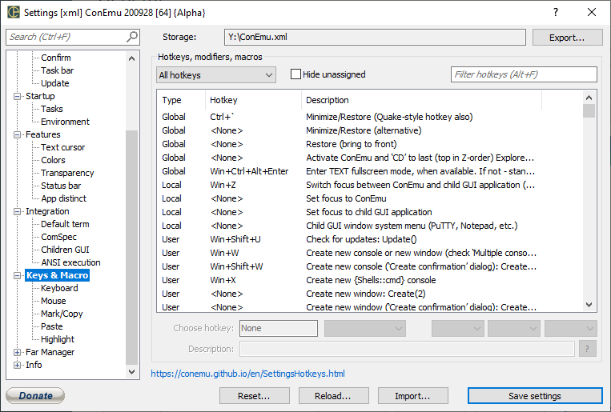

Settings: Keys & Macro

Hotkeys, modifiers, macros
Show
- All hotkeys
- User defined
- System
- Macros
Hide unassigned
Choose hotkey
Description
?
Hotkeys list
Note Apps key is a key between RWin and RCtrl.
| Hotkey | GuiMacro | Description |
| Ctrl+'~' | Minimize/Restore | |
| No default | Minimize/Restore (alternative) | |
| No default | Restore (bring to front) | |
| Ctrl+Win+Alt+Enter | Enter TEXT fullscreen mode, when available. If not - standard fullscreen and always on top | |
| No default | Switch focus between ConEmu and child GUI application (e.g. PuTTY or Notepad) | |
| No default | Set focus to ConEmu | |
| No default | Set focus to child GUI application | |
| No default | Child GUI window system menu (PuTTY, Notepad, etc.) | |
| Ctrl+Shift+'O' | Split(0,0,50) | Split: Duplicate active ‘shell’ split to bottom |
| Ctrl+Shift+'E' | Split(0,50,0) | Split: Duplicate active ‘shell’ split to right |
| Apps+Shift+UpArrow | Split(1,0,-1) | Split: Move splitter upward |
| Apps+Shift+DownArrow | Split(1,0,1) | Split: Move splitter downward |
| Apps+Shift+LeftArrow | Split(1,-1,0) | Split: Move splitter leftward |
| Apps+Shift+RightArrow | Split(1,1,0) | Split: Move splitter rightward |
| Apps+Tab | Tab(10,1) | Split: Put focus to next visible pane |
| Apps+Shift+Tab | Tab(10,-1) | Split: Put focus to previous visible pane |
| Apps+UpArrow | Split(2,0,-1) | Split: Put focus to nearest pane upward |
| Apps+DownArrow | Split(2,0,1) | Split: Put focus to nearest pane downward |
| Apps+LeftArrow | Split(2,-1,0) | Split: Put focus to nearest pane leftward |
| Apps+RightArrow | Split(2,1,0) | Split: Put focus to nearest pane rightward |
| Win+'W' | Create new console or new window (check ‘Multiple consoles in one ConEmu window’) | |
| Win+Shift+'W' | Create new console (after ‘Create confirmation’) | |
| Win+'N' | Show create new console popup menu | |
| No default | Show create new console popup menu with task submenus | |
| No default | Create new window (after ‘Create confirmation’) | |
| Win+'G' | Attach existing Console or GUI application | |
| Win+'Q' | Switch next console | |
| Win+Shift+'Q' | Switch previous console | |
| Win+'~' | Recreate active console | |
| Win+'A' | Show alternative console buffer (last command output) | |
| Win+'S' | Switch bufferheight mode | |
| Win+Delete | Close active console | |
| Win+Alt+Delete | Close(6) | Close current tab |
| No default | Close(4) | Close tabs of the active group |
| No default | Close(7) | Close all active processes of the active group |
| No default | Close(8) | |
| No default | Close(5) | |
| Win+Shift+Delete | Terminate active process in current console | |
| No default | Duplicate tab with current state of root process | |
| Win+F4 | Close(2) | Close all tabs (same as ‘Cross’ click) |
| Apps+'R' | Rename active tab (for Far Manager only first tab may be renamed) | |
| Win+Alt+LeftArrow | Move active tab leftward | |
| Win+Alt+RightArrow | Move active tab rightward | |
| Win+'X' | Create new ‘cmd.exe’ console | |
| No default | Start vertical block selection (like standard console) | |
| No default | Start text selection (like text editors) | |
| Ctrl+'C' | Copy(0,0) | Copy: Current selection as plain text (may be disabled) |
| Ctrl+Shift+'C' | Copy(0,1) | Copy: Current selection HTML formatted (may be disabled) |
| No default | Copy(0,2) | Copy: Current selection as HTML (may be disabled) |
| No default | Copy(1) | Copy: All active console text output (buffer including) |
| Apps+'L' | HighlightMouse(1) | Highlighting: Switch ‘Highlight row under mouse cursor’ |
| No default | Show opened tabs list (does not works in Far - use macro instead) | |
| Apps+F12 | Tabs(8) | Show opened tabs list (works in Far too) |
| Shift+Ins | Paste clipboard contents (does not work in Far) | |
| Ctrl+'V' | Paste first line of clipboard contents (does not work in Far) | |
| Ctrl+BACK | Delete word leftward to the cursor (does not work in Far) | |
| Apps+'F' | Find text in active console | |
| Win+'H' | Make screenshot of active window | |
| Win+Shift+'H' | Make screenshot of entire desktop | |
| Apps+'S' | Show status bar | |
| Apps+'T' | Show tab bar | |
| Apps+'C' | Show window caption | |
| No default | Switch ‘Always on top’ window mode | |
| No default | Transparency(1,-20) | Transparency: more translucent |
| No default | Transparency(1,+20) | Transparency: more opaque |
| Apps+Space | Show Tab context menu | |
| Shift+RightMouseButton | Show Tab context menu | |
| Alt+F9 | WindowMaximize() | Maximize/restore |
| No default | WindowMaximize(1) | Maximize width |
| No default | WindowMaximize(2) | Maximize height |
| Alt+Enter | WindowFullscreen() | Full screen |
| Alt+Space | Show ConEmu System menu | |
| Ctrl+RightMouseButton | Show ConEmu System menu | |
| Ctrl+UpArrow | Scroll buffer one line up (disabled in Far /w) | |
| Ctrl+DownArrow | Scroll buffer one line down (disabled in Far /w) | |
| Ctrl+PageUp | Scroll buffer one page up (disabled in Far /w) | |
| Ctrl+PageDown | Scroll buffer one page down (disabled in Far /w) | |
| Pause | PicView Far plugin: Slideshow start | |
| '-_' | PicView Far plugin: Slideshow slower | |
| '+=' | PicView Far plugin: Slideshow faster | |
| Ctrl+WheelUp | FontSetSize(1,2) | Make main font larger |
| Ctrl+WheelDown | FontSetSize(1,-2) | Make main font smaller |
| Ctrl+Shift+'F' | Paste(4) | Choose and paste file pathname |
| Ctrl+Shift+'D' | Paste(5) | Choose and paste folder path |
| Apps+Ins | Paste(8) | Paste path from clipboard in unix format |
| Win+Shift+LeftArrow | WindowMode(9) | Move ConEmu window to previous monitor |
| Win+Shift+RightArrow | WindowMode(10) | Move ConEmu window to next monitor |
| Win+LeftArrow | WindowMode(6) | Tile ConEmu window to the left edge of monitor |
| Win+RightArrow | WindowMode(7) | Tile ConEmu window to the right edge of monitor |
| RAlt | Block selection modifier | |
| RShift | Text selection modifier | |
| No default | Right and middle mouse buttons modifier (Text selection) | |
| No default | Change prompt text cursor position with left mouse click (cmd, powershell, tcc/le, ...) | |
| RCtrl | Highlighting: hyperlinks and compiler errors (FarGotoEditor modifier) | |
| No default | LDrag modifier | |
| RCtrl | RDrag modifier | |
| Ctrl+Alt+LeftMouseButton | Move ConEmu window by dragging client area | |
| Win+Alt+'A' | Show ‘About’ dialog | |
| Win+Alt+'K' | Show ‘Hotkeys’ | |
| Win+Alt+'P' | Show ‘Settings’ dialog | |
| Win+Alt+Space | Show ConEmu menu | |
| Ctrl+Win+Alt+Space | Show real console | |
| Win+Ctrl+Enter | WindowFullscreen() | Full screen |
| Ctrl+Tab | Next tab (may be disabled) (may be disabled) | |
| Ctrl+Shift+Tab | Previous tab (may be disabled) (may be disabled) | |
| Ctrl+LeftArrow | Switch tab to left (while Ctrl-Tab was pressed and Ctrl - hold) | |
| Ctrl+UpArrow | Switch tab to left (while Ctrl-Tab was pressed and Ctrl - hold) | |
| Ctrl+RightArrow | Switch tab to right (while Ctrl-Tab was pressed and Ctrl - hold) | |
| Ctrl+DownArrow | Switch tab to right (while Ctrl-Tab was pressed and Ctrl - hold) | |
| Esc | Minimize ConEmu by Esc when no open consoles left (see option ‘Don't close ConEmu on last console close’) | |
| Shift+LeftArrow | Select(0,-1) | Start text selection, ignored in Far, may be disabled on ‘Mark & Paste’ and ‘App distinct’ pages (may be disabled) |
| Shift+RightArrow | Select(0,1) | Start text selection, ignored in Far, may be disabled on ‘Mark & Paste’ and ‘App distinct’ pages (may be disabled) |
| Shift+Home | Select(0,-1,0,-1) | Start text selection, ignored in Far, may be disabled on ‘Mark & Paste’ and ‘App distinct’ pages (may be disabled) |
| Shift+End | Select(0,1,0,1) | Start text selection, ignored in Far, may be disabled on ‘Mark & Paste’ and ‘App distinct’ pages (may be disabled) |
| Shift+UpArrow | Select(1,0,-1) | Start block selection, ignored in Far, may be disabled on ‘Mark & Paste’ and ‘App distinct’ pages (may be disabled) |
| Shift+DownArrow | Select(1,0,1) | Start block selection, ignored in Far, may be disabled on ‘Mark & Paste’ and ‘App distinct’ pages (may be disabled) |
| Win(configurable)+LeftArrow | Decrease window width (check ‘Resize with arrows’) (may be disabled) | |
| Win(configurable)+RightArrow | Increase window width (check ‘Resize with arrows’) (may be disabled) | |
| Win(configurable)+UpArrow | Decrease window height (check ‘Resize with arrows’) (may be disabled) | |
| Win(configurable)+DownArrow | Increase window height (check ‘Resize with arrows’) (may be disabled) |